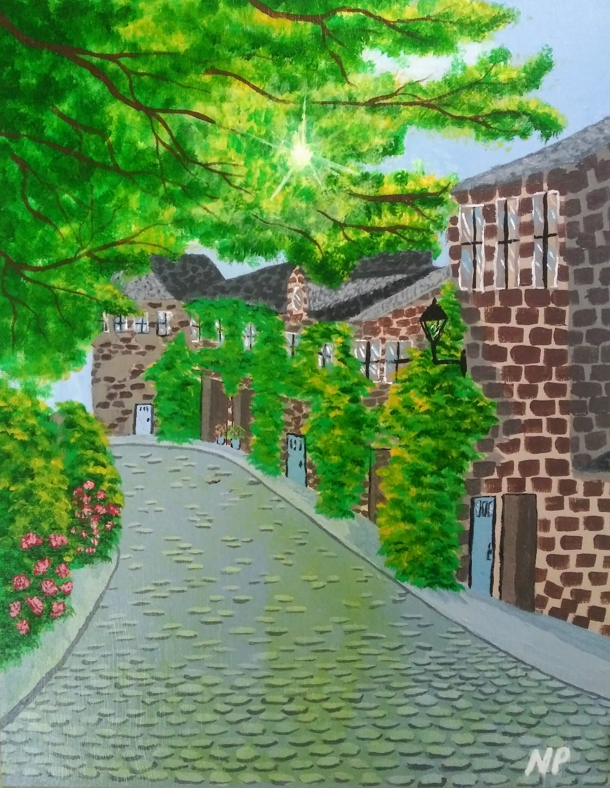
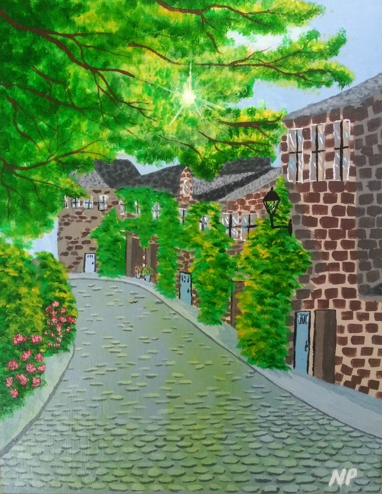

Acrylic paint is one of the most versatile mediums, and one of the least toxic. It is water-soluble when wet, then dries to be a flexible, water-resistant, and durable surface to which new layers of paint can be added without disturbing the underlying layers. Acrylics dry rapidly and are capable of giving both the transparency of watercolor and the density of oil paint.

 
